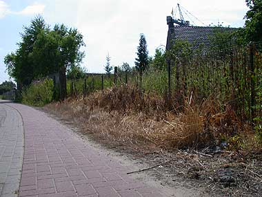

De Vlaming en …
dinsdag 8 juli 2003 | Kommer
… zijn gifspuit. Je komt ze deze maanden overal tegen tussen de huizen door: deze doodgespoten, verschroeide stukjes grasberm. Iemand moet mij maar eens uitleggen wat aan deze kankerplekjes nu mooier is dan een klaproos en wat margrieten. En laat ons dan nog zwijgen over de implicaties van de duizenden liters onkruidverdelger op het milieu en onze voedselketen…
En als ook u toevallig zo’n chemisch tuintje zou onderhouden geflankeerd door een kazerneopstelling coniferen met een onkruidvrije biljartmat in het midden, … Het is nooit te laat om uw leven te beteren. De Vlaamse Overheid doet in ieder geval ook haar best om u te overtuigen met een nagelnieuwe en informatieve website over bestrijdingsmiddelen.
